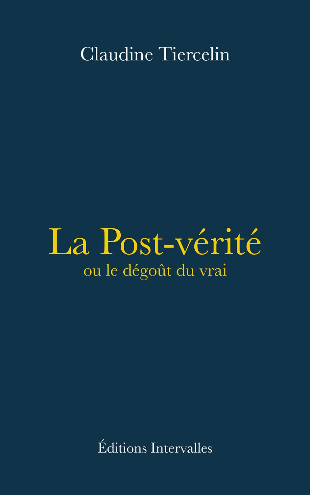
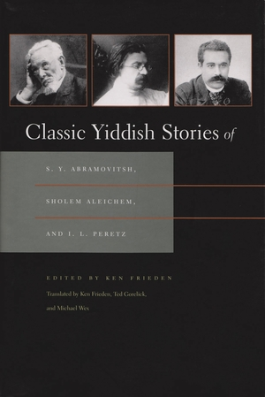

55:35 · 4 OPERE
No, noi no. Appunti sul dovere intellettuale in un'epoca anticulturale.
Il filo del discorso
Gli auguri di Natale aprono una riflessione sul dovere di chi lavora con idee e conoscenze. Dr Divago sostiene che la cultura diventa il proprio contrario quando offre soltanto narrazioni da ripetere, invece di rendere possibile un giudizio autonomo. La risposta a un commento sulla polarizzazione introduce il punto più impegnativo: un discorso deve poter essere interrogato attraverso fatti, ragioni e obiezioni, senza ridursi alla reputazione di chi lo pronuncia. La stessa regola vale però anche per le affermazioni del relatore, comprese quelle sui mercatini natalizi, sui finanziamenti universitari e sulla storia del Medio Oriente. Il tema morale è espresso attraverso areté, la virtù intesa come qualità del carattere, e attraverso la disponibilità a dire di no. L’indipendenza intellettuale, secondo Dr Divago, si misura quando sostenere una posizione documentata può produrre un danno personale. L’aneddoto di Leonida, il richiamo alla deontologia kantiana e la formula di Bartleby costruiscono questo invito alla fermezza. Il relatore distingue il compenso per il lavoro di un insegnante dalla pretesa di comprarne le conclusioni. La sua proposta provocatoria di pagare gli accademici perché smettano di pubblicare è un esperimento retorico sulla motivazione, non una indagine che dimostri quanti docenti agiscano soltanto per denaro. Il libro che dà un centro al discorso è Der Satz vom Grunde di Rudolf Laun. Dr Divago legge dalla prefazione una osservazione sulla scarsa circolazione del pensiero: se un nuovo Platone, Aristotele o Kant pubblicasse grandi opere, pochi specialisti ne verrebbero a conoscenza, mentre sportivi, divi e politici riceverebbero una esposizione quotidiana. Il confronto viene trasferito alla rete e alla università contemporanea. La attenzione verso la visibilità sostituirebbe, nella lettura del relatore, la attenzione verso la qualità delle idee. I riscontri distinguono la edizione ampliata del 1956 dalla prima del 1942 e non trasformano le accuse di deliberato occultamento in fatti provati. La discussione della post-verità entra attraverso il libro di Claudine Tiercelin. Dr Divago teme che il richiamo alle false notizie diventi un modo di spostare o neutralizzare il problema della verità. La presentazione editoriale dell’opera, tuttavia, propone una difesa della conoscenza e della discussione delle ragioni, più ampia di una sola polemica sulle fake news. La scheda rende quindi visibile il dissenso senza attribuire alla autrice una tesi esaurita dal giudizio di chi la critica. Anche gli attacchi a studiosi, media e commentatori restano opinioni del video: non sostituiscono la confutazione dei loro argomenti. La conclusione passa dalla reputazione alle azioni. Una persona religiosa, sospettata di condurre una doppia vita o creduta capace di salire in cielo, viene seguita e scoperta mentre aiuta una anziana. Il valore della storia è nel bene compiuto senza pubblicità. La corrispondenza con If Not Higher! di Peretz è forte, ma resta dichiarata probabile perché il relatore non ne nomina autore e titolo e cambia alcuni dettagli. Il no finale riassume la proposta etica: la pressione del gruppo non basta a rendere giusto ciò che si ritiene sbagliato. Questa difesa del carattere non richiede di accettare ogni ricostruzione storica o ogni accusa politica che la accompagnano.
I libri nel discorso

Bartleby lo scrivano
Identificazione probabile
Copertina della raccolta: Bompiani · Bartleby lo scrivano e altri racconti · 2018
Copertina della raccolta Bompiani che contiene Bartleby lo scrivano. Non è presentata come copertina di un’edizione autonoma del racconto né come l’esemplare citato nel video.
Preferirei di no: formula riconoscibile di Bartleby, titolo e autore non pronunciati nel passaggio; collegamento probabile.
Passaggio 11:27 ↗ · Fonti e libro ↗Der Satz vom Grunde. Ein System der Erkenntnistheorie
Fotografia della seconda edizione ampliata · Mohr, 1956: Tübingen, J.C.B.Mohr (Paul Siebeck), prima edizione 1942, 324 pagine; seconda edizione ampliata con una postfazione, 1956, 337 pagine. La fotografia è di un esemplare della seconda edizione 1956, non di una prima edizione del 1956.
Fotografia autentica del venditore Bookbot, con copertina verde: titolo, autore, Rudolf Laun, e indicazione della seconda edizione leggibili. L’immagine mostra il libro tenuto in mano. La copia del video non è identificata come questo specifico esemplare.
Rudolf Laun, Mohr, 1956 e libro epistemologico; titolo pronunciato al minuto 45 circa, Der Satz vom Grunde.
Passaggio 23:13 ↗ · Fonti e libro ↗
La Post-vérité ou le dégoût du vrai
Copertina: Éditions Intervalles, 21 aprile 2023, 112 pagine, in francese, ISBN 9782369563181. Copertina ufficiale dell’opera; la fiera menzionata nel video non è assunta come data della prima edizione.
Immagine autentica dell’opera, controllata visivamente; l’edizione di riferimento non è attribuita al filmato.
La Post-vérité ou le dégoût du vrai e la autrice Tiercelin sono espliciti.
Passaggio 30:15 ↗ · Fonti e libro ↗
If Not Higher! / Oyb nisht nokh hekher! · Se non più in alto!
Identificazione probabile
Copertina della antologia di tre autori · Syracuse, 2011: Racconto apparso su Der Yud, 11 gennaio 1900. La traduzione di Ken Frieden è in Classic Yiddish Stories of S. Y. Abramovitsh, Sholem Aleichem, and I. L. Peretz, a cura di Ken Frieden, Syracuse University Press, brossura 2011, 304 pagine, ISBN 9780815632917. Immagine della antologia, non di una edizione autonoma del racconto.
Il racconto di Peretz è distinto dalla antologia curata da Ken Frieden, che comprende anche Abramovitsh e Sholem Aleichem. La guida Yiddish Book Center riscontra la presenza della traduzione a pagina 164. Il video non nomina autore o titolo e modifica alcuni dettagli: identificazione probabile, non rivendicazione di una edizione letta dal relatore.
Storia del religioso seguito fino alla casa della anziana e finale più in alto: corrispondenza probabile con If Not Higher!, autore e titolo non detti.
Passaggio 51:42 ↗ · Fonti e libro ↗